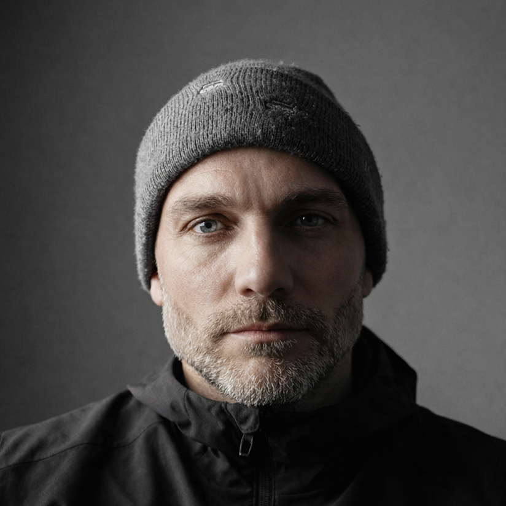

Jason Curry
Co-founder & CEO, Xerg
I'm building Xerg, the economic control plane for AI agent fleets. Xerg audits agent runs from existing logs, classifies structural waste into dollar-denominated findings, and proves the savings with before/after comparison. No SDK required.
I've spent 20+ years shipping software. I founded Worry Free Labs, a digital product studio in NYC I grew to roughly 70 people with clients including Goldman Sachs, Disney, and Nike, and led it to acquisition. I later founded Continuum (with Jamey Gannon), an education platform that reached 100,000 learners, won Product Hunt's Education Product of the Year in 2022, and was backed by Balaji Srinivasan, Outlier Ventures, Shima Capital, and GSR. I mentor founders through Harvard Business School's FIELD program.
All of my work is Xerg. If you're running AI agents in production and want to know where the money goes, start here →